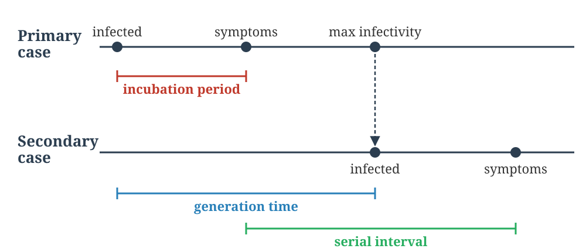
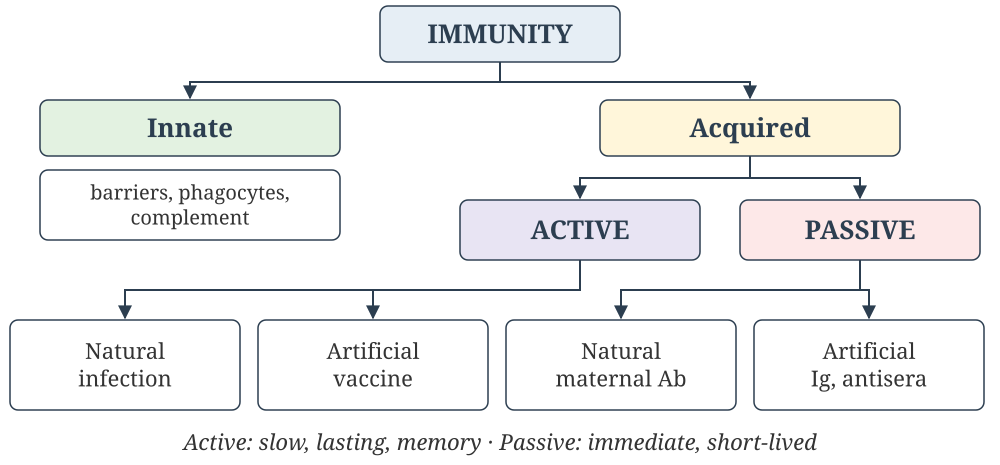
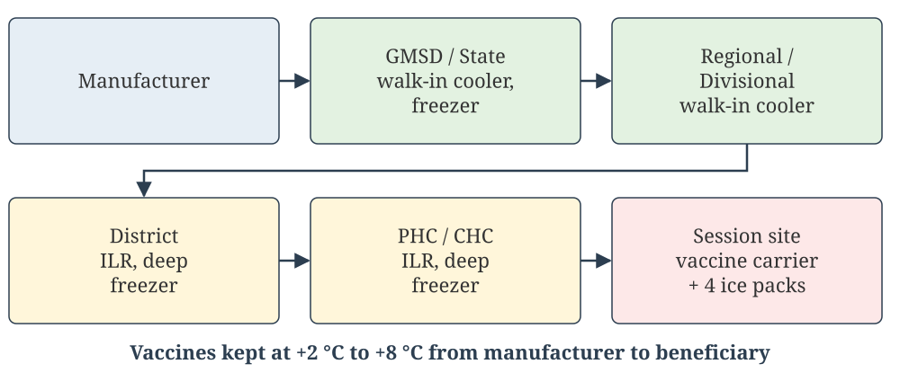
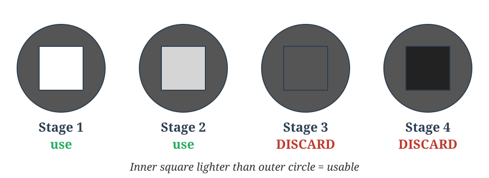
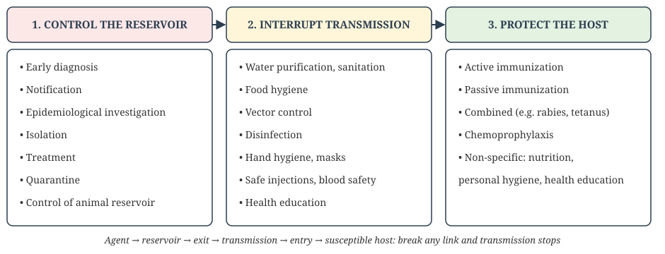
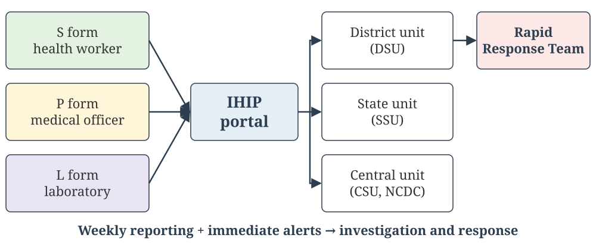

Communicable disease transmission depends on six linked elements — break any one link, and transmission stops:
Infectious agent — the causative organism
Reservoir — where the agent lives and multiplies (human, animal, or environment)
Portal of exit — how the agent leaves the reservoir (respiratory tract, gut, skin, blood)
Mode of transmission — how it travels to a new host
Portal of entry — how it enters the new host
Susceptible host — an individual capable of being infected
Chain of Infection: Visual Summary
🟢 MUST KNOW
Breaking any single link — e.g. safe water interrupting the portal of exit/entry, or vaccination removing the susceptible host — stops transmission around the entire ring, regardless of which link is targeted.
The Agent in Disease Causation
🟡 SHOULD KNOW
Agent: a substance, living or non-living, whose presence (or absence) is essential for a disease to occur. It is one corner of the epidemiological triad of agent, host and environment (Chapter 2).
Ability to produce clinical disease in those infected
Clinical cases ÷ all infections
Virulence
Severity of the disease produced
Case fatality rate
Measles: high infectivity and pathogenicity, low virulence (except in the malnourished)
Polio: high infectivity, low pathogenicity (over 90% of infections are inapparent)
Rabies: virulence close to 100%
Infective dose: the number of organisms needed to cause infection, low for Shigella (10–100) and high for V. cholerae
Host and Environment in Transmission
🟡 SHOULD KNOW
Host factors decide whether exposure becomes infection and then disease:
Portal of entry and intact barriers (skin, mucosa, gastric acid)
Immune status: past infection, immunization, immunodeficiency
Age, sex, nutrition, pregnancy, genetic factors
Behaviour: hygiene, sexual behaviour, occupation, travel
Environmental factors:
Physical: climate, water, housing, crowding
Biological: vectors, animal reservoirs
Social: poverty, sanitation, health services
Agent, host and environment together form the epidemiological triad.
Reservoirs of Infection
🟢 MUST KNOW
Source = the person, animal or object from which the agent passes to the host. Reservoir = where the agent normally lives and multiplies.
Human reservoir: a case (clinical, subclinical or latent) or a carrier (infected and shedding but without overt disease)
Animal reservoir: diseases transmitted from vertebrate animals to humans are zoonoses (rabies, plague, leptospirosis)
Non-living reservoir: soil and inanimate matter (tetanus spores in soil, Legionella in water systems)
Carrier States
🟡 SHOULD KNOW
A carrier is an infected person who sheds the agent without showing overt disease, before or after it. Carriers matter because clinical surveillance often misses them.
By type:
incubatory: sheds during the incubation period (measles, polio)
convalescent: continues shedding after clinical recovery (typhoid, cholera)
healthy: sheds without ever having overt disease (polio, meningococcus)
By duration:temporary (short-lived shedding) vs chronic (indefinite shedding, e.g. typhoid and hepatitis B). Chronic carriers are the greater public-health threat.
By portal of exit: urinary, intestinal, respiratory, nasal
A diagnosed case is usually isolated. An unrecognized chronic carrier keeps transmitting silently.
Epidemic, Endemic, and Pandemic
🟢 MUST KNOW
Term
Meaning
Endemic
Constant, expected presence of a disease in a given area or population, without importation
Sporadic
Cases occur irregularly and infrequently, with no consistent pattern
Epidemic
Cases clearly in excess of normal expectancy for that place, population and season
Pandemic
An epidemic spanning several countries or continents, usually affecting large numbers of people
Exotic
A disease imported into an area where it does not otherwise occur
Zoonoses are classified by direction:
anthropozoonoses: animal → human (rabies, anthrax)
zooanthroponoses: human → animal (human TB in cattle)
amphixenoses: either direction
Modes of Transmission
🟢 MUST KNOW
Direct transmission
Direct contact (skin, mucosa, sexual): STIs, leprosy, scabies
Incubation period is the time from entry of the infectious agent to the first sign or symptom of disease. It depends on the infective dose, portal of entry, host susceptibility and the agent’s generation time.
Uses: tracing the source of infection, setting the period of quarantine and surveillance of contacts (= the longest incubation period), timing immunization and prophylaxis, and identifying point-source vs propagated epidemics.
Generation time: from receipt of infection to the host’s maximal infectivity
Serial interval: from onset in the primary case to onset in the secondary case
Communicable period: the time during which an infected person can transmit the agent
Incubation, Generation Time, Serial Interval
🟡 SHOULD KNOW

Timeline of incubation period, generation time and serial interval
Secondary Attack Rate
🟢 MUST KNOW
Secondary Attack Rate (SAR) measures how contagious a disease is within a close-contact group after exposure to a primary case:
SAR = (New cases among contacts within one incubation period / Total susceptible contacts) × 100
Exclude the primary case and contacts who are immune (by immunization or past attack) from the denominator
Worked example: a household of 6 has 1 primary measles case and 1 immune member, leaving 4 susceptibles. 2 develop measles within one incubation period, so SAR = 2/4 = 50%.
Case Scenario: Measles in a Household
🧡 CASE SCENARIO
A child with measles lives in a household of 7. The father had measles in childhood. A younger sibling has had 2 doses of MR vaccine. Of the other 4 members, one falls ill 2 days later and two more fall ill 10–12 days later.
Who are the susceptible contacts?
How do you treat the person who fell ill after 2 days?
Calculate the secondary attack rate.
Case Scenario: Measles in a Household, Discussion
🧡 CASE SCENARIO: DISCUSSION
Exclude the primary case, the immune father and the vaccinated sibling, leaving 4 susceptible contacts
Onset after 2 days is shorter than the minimum incubation period, so this is a co-primary case infected from the same source. Exclude them from both numerator and denominator, leaving 3 susceptibles.
SAR = 2 ÷ 3 × 100 ≈ 67%
Basic Reproduction Number (R₀)
🟢 MUST KNOW
R₀ is the average number of secondary infections produced by one infected person in a completely susceptible population.
R₀ > 1: each case generates more than one new case, giving epidemic potential
R₀ < 1: the outbreak is expected to die out
R₀ = 1: the disease remains endemic at a steady rate
R₀ depends on the contact rate, the probability of transmission per contact, and the duration of infectiousness. Measles has an R₀ of about 12–18, and influenza about 1.5–2.
Practice Questions: Descriptive (Lecture 10)
For written practice — work through these on paper; no auto-check for this slide.
Short Essay / Short Answer
Write the various modes of disease transmission with examples and control measures for each.
Describe the chain of infection (dynamics of disease transmission).
Short Notes
Secondary attack rate and its calculation.
Carriers.
Incubation period and its uses.
Basic reproduction number (R₀).
Practice Questions: Descriptive (Lecture 10, contd.)
University Examination Questions
Epidemiological triad.
Define “agent” in disease causation. Explain the different types of agents.
Short Notes (additional)
Infectivity, pathogenicity and virulence.
Host factors in disease transmission.
Self-Check: Question 1
🧡 QUESTION
Question 1
Which of the following is NOT one of the six links in the chain of infection?
Reservoir
Portal of exit
Herd immunity
Susceptible host
Self-Check: Question 2
🧡 QUESTION
Question 2
Malaria, transmitted from an infected person to a new host via a mosquito, is an example of which mode of transmission?
Direct contact
Droplet spread
Vector-borne transmission
Fomite transmission
Self-Check: Question 3
🧡 QUESTION
Question 3
A typhoid patient continues to excrete S. Typhi in stools for several weeks after clinical recovery. This person is a:
Incubatory carrier
Convalescent carrier
Healthy carrier
Contact
Self-Check: Question 4
🧡 QUESTION
Question 4
In a household of 6, one person develops measles (the primary case). One other member is already immune. Within one incubation period, 2 more members develop measles. The secondary attack rate is:
33%
40%
50%
60%
Self-Check: Question 5
🧡 QUESTION
Question 5
The time interval between receipt of infection by a host and maximal infectivity of that host is called the:
Incubation period
Serial interval
Generation time
Communicable period
Self-Check: Question 6
🧡 QUESTION
Question 6
If a disease has a basic reproduction number (R₀) of less than 1 in a population, the disease will:
Spread as an epidemic
Remain endemic at a stable level
Gradually die out
Become pandemic
Self-Check: Question 7
🧡 QUESTION
Question 7
The case fatality rate of a disease is a measure of the agent’s:
Infectivity
Pathogenicity
Virulence
Infective dose
Self-Check: Question 8
🧡 QUESTION
Question 8
Poliovirus produces paralysis in less than 1% of those it infects. This reflects the virus’s low:
Infectivity
Pathogenicity
Communicability
Herd immunity
Lecture 11: Immunity and Immunising Agents
📚 Lecture 11 of 15 · CM7.L11
Immunity and immunising agents
Types of Immunity
🟢 MUST KNOW

Types of immunity
Active vs Passive Immunity
🟢 MUST KNOW
Active immunity
Passive immunity
Produced by
The host’s own immune system
Ready-made antibodies from another source
Induced by
Infection or vaccination
Maternal transfer; immunoglobulins, antisera
Onset
Slow (lag phase of 1–2 weeks or more)
Immediate
Duration
Long-lasting (years)
Short (weeks to months)
Memory and boosters
Immunological memory; boosters effective
No memory
Use
Prophylaxis
Immediate protection, treatment, immunodeficiency
Combined active–passive: rabies post-exposure (RIG + vaccine) and tetanus-prone wounds (TIG + TT/Td) give immediate and lasting protection.
Herd Immunity
🟢 MUST KNOW
Herd immunity is the level of resistance of a community to an infection. When a high proportion is immune, chains of transmission break and even non-immune individuals are protected.
Herd immunity threshold (HIT):
HIT = 1 − (1 / R₀)
Example: a disease with R₀ = 3 needs about 67% of the population immune, and measles (R₀ about 15) needs more than 90%.
It depends on clinical and subclinical infections, immunization coverage, and the herd structure (density, mixing)
It does not protect against tetanus, which has no person-to-person spread
Antisera carry a risk of serum sickness and anaphylaxis. Give a test dose and keep adrenaline ready. Human immunoglobulins are preferred where available.
Types of Vaccines
🟡 SHOULD KNOW
Type
How it works
Examples
Live attenuated
Weakened live organism; strong, long-lasting immunity from few doses
BCG, OPV, MR/MMR, rotavirus, yellow fever
Killed / inactivated
Whole organism inactivated; safer in the immunocompromised, but needs boosters
IPV, rabies (cell culture), whole-cell pertussis
Toxoid
Inactivated bacterial toxin, not the organism
Tetanus, diphtheria
Subunit / recombinant / conjugate
A specific antigenic component
Hepatitis B, Hib, PCV, HPV
Newer platforms
mRNA, viral vector
COVID-19 vaccines
Exam tip: live vaccines are generally contraindicated in pregnancy and in immunocompromised people, because the attenuated organism can still replicate.
Cold Chain and AEFI
🟡 SHOULD KNOW
Cold chain is the system of storing and transporting vaccines at recommended temperatures from manufacturer to beneficiary, at +2 °C to +8 °C.
Equipment: walk-in coolers and freezers → ILR and deep freezer (PHC) → cold box → vaccine carrier with conditioned ice packs
Heat-sensitive: OPV (most), measles/MR, BCG. Freeze-sensitive (never freeze): Hep B, pentavalent, DPT, TT/Td, IPV, PCV. Freezing is checked with the shake test.
Vaccine Vial Monitor (VVM): a heat-exposure indicator. Discard the vial when the inner square matches or is darker than the outer circle.
AEFI (adverse event following immunization): any untoward medical occurrence after immunization, not necessarily caused by the vaccine.
WHO causes: vaccine product-related, quality defect-related, immunization error-related, immunization anxiety-related, and coincidental
Serious AEFIs (death, hospitalization, disability, clusters) must be reported and investigated
The Cold Chain
🟡 SHOULD KNOW

Cold chain from manufacturer to session site
Vaccine Vial Monitor
🟡 SHOULD KNOW

Four stages of the vaccine vial monitor
Check the VVM before every use. The shake test detects freezing damage, which the VVM does not show.
Case Scenario: Dog Bite and a Vaccine Carrier
🧡 CASE SCENARIO
A 25-year-old unimmunized man has deep bites with bleeding on the hand from a stray dog (category III). At the PHC, the nurse finds that the inner square of the anti-rabies vaccine VVM matches the outer circle.
What immunization does he need, and what kind of immunity does each component give?
Why give both?
Can the vial be used?
Case Scenario: Dog Bite and a Vaccine Carrier, Discussion
🧡 CASE SCENARIO: DISCUSSION
Wound wash with soap and running water for 15 minutes. Rabies immunoglobulin infiltrated into the wounds gives artificial passive immunity. Anti-rabies vaccine (e.g. IM on days 0, 3, 7, 14, 28, or the intradermal schedule) gives artificial active immunity. Add tetanus prophylaxis.
RIG protects immediately, during the 1–2 weeks before vaccine-induced antibody appears. The vaccine gives lasting protection. This is combined passive–active immunization.
No. A VVM at stage 3 (square matches circle) means too much heat exposure: discard it and use a vial at stage 1 or 2.
Open Vial Policy and the UIP Schedule
🟡 SHOULD KNOW
Open Vial Policy (MoHFW, revised Sept 2015): a partly used multi-dose vial of DPT, TT/Td, Hepatitis B, OPV, pentavalent or IPV can be used at later sessions for up to 28 days after opening, provided:
it is within its expiry date
the VVM is still usable (stage 1 or 2)
it was stored at +2 °C to +8 °C, not submerged in water and not contaminated
the date and time of opening are written on the vial
Not covered: reconstituted vaccines (BCG, measles/MR, JE). Discard these at the end of the session, or within 4 hours of reconstitution, whichever is earlier.
Policy details retrieved 28 Oct 2026. Check the latest MoHFW circular.
Practice Questions: Descriptive (Lecture 11)
For written practice — work through these on paper; no auto-check for this slide.
Short Essay / Short Answer
Classify immunity with examples. Differentiate active and passive immunity.
Describe the immunizing agents: vaccines, immunoglobulins and antisera.
Short Notes
Herd immunity.
Cold chain.
Adverse events following immunization (AEFI).
Live vs killed vaccines.
Practice Questions: Descriptive (Lecture 11, contd.)
Short Notes (additional)
Open vial policy.
Self-Check: Question 9
🧡 QUESTION
Question 9
A disease has R₀ = 4. What proportion of the population must be immune to reach the herd immunity threshold?
25%
50%
75%
100%
Self-Check: Question 10
🧡 QUESTION
Question 10
Immunity acquired by a newborn from maternal antibodies transferred across the placenta is:
Natural active immunity
Natural passive immunity
Artificial active immunity
Artificial passive immunity
Self-Check: Question 11
🧡 QUESTION
Question 11
Administration of tetanus immunoglobulin to an unimmunized patient with a contaminated wound provides:
Natural active immunity
Natural passive immunity
Artificial active immunity
Artificial passive immunity
Self-Check: Question 12
🧡 QUESTION
Question 12
Which of the following is a live attenuated vaccine?
Tetanus toxoid
Hepatitis B vaccine
BCG
Inactivated polio vaccine (IPV)
Self-Check: Question 13
🧡 QUESTION
Question 13
Which of the following vaccines is the MOST heat-sensitive?
BCG
Oral polio vaccine (OPV)
Tetanus toxoid
Hepatitis B
Self-Check: Question 14
🧡 QUESTION
Question 14
The Vaccine Vial Monitor (VVM) on a vial indicates:
Whether the vaccine has been frozen
Cumulative heat exposure of the vial
The expiry date of the vaccine
Whether the vial has been opened
Self-Check: Question 15
🧡 QUESTION (select ALL that apply)
Question 15
Which of the following are recognized causes in the WHO classification of adverse events following immunization (AEFI)?
Vaccine product-related reaction
Immunization error-related reaction
Immunization anxiety-related reaction
Coincidental event
Self-Check: Question 16
🧡 QUESTION
Question 16
Under India’s Open Vial Policy, which opened vaccine vial must be discarded at the end of the session and cannot be used at a later session?
Pentavalent
Hepatitis B
Measles-Rubella (MR)
OPV
Lecture 12: Disease Prevention, Control, and Disinfection
📚 Lecture 12 of 15 · CM7.L12
Disease prevention and control; disinfection
Control of Communicable Diseases
🟢 MUST KNOW

Three groups of control measures
Controlling the Reservoir
🟢 MUST KNOW
Early diagnosis: treatment, epidemiological investigation, early control
Notification: legal reporting of notifiable diseases to the health authority. Internationally notifiable events go through the IHR (2005).
Epidemiological investigation: find the source and the contacts
Isolation: separate infected cases for their period of communicability
Treatment: cuts the period of communicability, as in TB, leprosy and STIs
Quarantine: restrict healthy contacts for the longest incubation period
Disinfection: concurrent and terminal (next slides)
Isolation vs. Quarantine
🟡 SHOULD KNOW
Isolation: separating a person already known to be infected from others until they are no longer infectious. Types include standard, strict, respiratory, enteric and contact isolation.
Quarantine: restricting a healthy person exposed to a communicable disease, for a period equal to the longest incubation period, to see whether disease develops
Absolute (complete) quarantine: full restriction of movement
Modified quarantine: selective restriction (e.g. excluding children from school)
Segregation: separating a group for observation
Both are control measures on different links of the chain. Isolation removes an active source, and quarantine stops transmission from a possible future case.
Levels of Prevention Applied to Communicable Disease
🟢 MUST KNOW
Level
Communicable disease example
Primordial
Improving sanitation and housing before any outbreak risk exists
Primary
Immunization, chemoprophylaxis, vector control, safe water, health education
Secondary
Case detection, contact tracing, early treatment, screening (e.g. TB active case finding)
Tertiary
Disability limitation and rehabilitation from sequelae (e.g. post-polio, leprosy deformities)
Control, Elimination, Eradication: Recap
🟣 RECAP
Term
Meaning
Example
Control
Reduce incidence, prevalence and mortality to a locally acceptable level
Malaria and TB control
Elimination
Interrupt transmission in a defined area; vigilance continues
Polio-free India (2014), yaws (2016), maternal and neonatal tetanus (2015)
Eradication
Worldwide termination of infection; the agent no longer exists in nature
Choosing an agent: consider the target organism, the material, organic load, contact time, toxicity and cost. Biomedical waste is managed under the BMW Management Rules, 2016.
Case Scenario: A Cholera Case at Home
🧡 CASE SCENARIO
A confirmed cholera case is being treated at home in a village with a shared well. The family of 6 lives in two rooms.
What concurrent disinfection is needed?
What is done when the patient recovers?
How will you manage the contacts and the well?
Case Scenario: A Cholera Case at Home, Discussion
🧡 CASE SCENARIO: DISCUSSION
Concurrent: disinfect stools and vomit with bleaching powder or hypochlorite before disposal in a latrine. Soak soiled linen in hypochlorite solution or boil it. Wash hands with soap.
Terminal: clean the room, floor and furniture with hypochlorite solution, and wash or sun-dry the bedding
Contacts: surveillance for 5 days (the maximum incubation), with selective chemoprophylaxis for household contacts (e.g. single-dose doxycycline for adults). Mass chemoprophylaxis is not recommended.
Well: chlorinate it and test residual chlorine. Notify through IDSP, give ORS and health education.
Practice Questions: Descriptive (Lecture 12)
For written practice — work through these on paper; no auto-check for this slide.
Short Essay / Short Answer
Describe the methods for the control of communicable diseases: controlling the reservoir, interrupting transmission, and protecting the susceptible host.
Define disinfection. Describe its types and the agents used, with their applications.
Short Notes
Isolation vs quarantine.
Concurrent and terminal disinfection.
Chemoprophylaxis.
Self-Check: Question 17
🧡 QUESTION
Question 17
A person who was exposed to a confirmed case, but has no symptoms and unknown infection status, is placed in separate accommodation for the incubation period of the disease. This is:
Isolation
Quarantine
Ring vaccination
Contact tracing
Self-Check: Question 18
🧡 QUESTION
Question 18
Disinfection of the sickroom, its contents and bedding after the patient has been removed by recovery, death or transfer is called:
Concurrent disinfection
Terminal disinfection
Precurrent disinfection
Sterilization
Self-Check: Question 19
🧡 QUESTION
Question 19
Chlorination of a community water supply is an example of:
Concurrent disinfection
Terminal disinfection
Precurrent (prophylactic) disinfection
Sterilization
Self-Check: Question 20
🧡 QUESTION
Question 20
Giving rifampicin to the household contacts of a case of meningococcal meningitis is an example of:
Controlling the reservoir
Interrupting transmission
Chemoprophylaxis to protect the susceptible host
Active immunization
Self-Check: Question 21
🧡 QUESTION
Question 21
Which measure acts on the RESERVOIR link of the chain of infection?
Early diagnosis and treatment of cases
Vector control
Water chlorination
Immunization of contacts
Lecture 13: Epidemic Investigation and Surveillance
📚 Lecture 13 of 15 · CM7.L13
Investigation of an epidemic; surveillance (IDSR / IHIP)
Outbreak Investigation: The 10 Steps
🟢 MUST KNOW
The standard CDC-style sequence for investigating a suspected outbreak:
Prepare for field work
Establish the existence of an outbreak (compare with expected numbers)
Verify the diagnosis
Define and identify cases (case definition, active case search)
Describe data by time, place and person (epidemic curve, spot map)
Develop hypotheses
Evaluate hypotheses (case-control or cohort study)
Refine hypotheses and conduct additional studies (laboratory, environmental)
Implement control and prevention measures
Communicate findings (report)
In practice the steps overlap. Control measures often start before the investigation formally ends. Park and the textbook put verification of the diagnosis as the very first step (next slide).
Investigation of an Epidemic: Park’s Steps
🟢 MUST KNOW
Verification of the diagnosis: clinical examination of a sample of cases, plus laboratory confirmation
Confirmation of the existence of an epidemic: compare with the same period of the previous 3 years
Defining the population at risk: a map of the area, and the population denominator
Rapid search for all cases: a line list (nominal roll of reported cases), active house-to-house search, and the epidemiological case sheet
Data analysis: time (epidemic curve), place (spot map), person (age, sex, occupation)
Formulation of a hypothesis: source, mode of spread, population affected
Testing the hypothesis: compare attack rates in the exposed and unexposed (case-control or cohort)
Evaluation of ecological factors: sanitation, water, vectors, food handling
Further investigation of the population at risk: e.g. serological surveys
Writing the report: with control measures and recommendations
Case Scenario: Typhoid in One Locality
🧡 CASE SCENARIO
A health officer sees that reported typhoid cases in a town have doubled this month compared with the same month last year. Most cases cluster in one locality.
What epidemiological phenomenon is suggested?
Which measure of frequency is being compared?
What is the first step of investigation?
Name two possible sources of infection.
How does epidemiology help plan control?
Case Scenario: Typhoid in One Locality, Discussion
🧡 CASE SCENARIO: DISCUSSION
An epidemic (outbreak): cases clearly in excess of the expected level. The clustering suggests a common source.
Incidence (new cases, i.e. an attack rate), compared with the same period in previous years (ideally 3)
Verify the diagnosis (blood culture), then confirm the existence of the epidemic
A contaminated water supply (a leaking pipe with sewage cross-connection), or food from a common vendor or a carrier food handler
Time-place-person analysis (spot map, epidemic curve) pinpoints the source, which is then targeted: chlorination and pipe repair, food hygiene, treating cases and carriers, typhoid conjugate vaccine for high-risk groups, health education and continued surveillance.
The Epidemiological Case Sheet
🟡 SHOULD KNOW
A standard case investigation form is filled for every case during an epidemic. It records:
Clinical: date of onset (for the epidemic curve), symptoms, signs, severity, outcome
Exposure history: food, water, travel, gatherings, animal or vector contact within the incubation period
Contacts: household and others, with their immunization or prophylaxis status
Laboratory: specimens taken, results
Investigator: name and date
Aggregating case sheets gives the time-place-person description from which hypotheses are formed.
Surveillance: Definition and Types
🟢 MUST KNOW
Surveillance is the continuous, systematic collection, analysis and interpretation of health data, with timely dissemination to those who need to know, for action. In short: “information for action”.
Type
How it works
Example
Passive
Cases reported by health facilities on their own; cheap, under-reports
Ongoing measurement of an activity or programme to check that it runs as planned
Continuous scrutiny of disease occurrence and its determinants, for action
Focus
Inputs, process, outputs, coverage
Cases, deaths, risk factors, trends
Example
Monthly immunization coverage, drug stock, sessions held
AFP surveillance, IDSP weekly reports
Leads to
Correcting implementation
Outbreak response, control measures
Evaluation is periodic: it judges whether the programme achieved its objectives (effectiveness, efficiency, impact).
Notifiable Diseases, IHR, and Epidemic Thresholds
🟡 SHOULD KNOW
Notifiable diseases: diseases that must legally be reported to health authorities.
Internationally under the IHR.
Nationally and by state: e.g. cholera, plague, TB (notifiable in India since 2012), AFP and polio, measles, diphtheria, dengue, Japanese encephalitis, and others as listed by each state.
International Health Regulations (2005): legally binding on WHO member states. Every country has a National IHR Focal Point (NCDC, India), which must notify WHO within 24 hours of any event that may be a Public Health Emergency of International Concern (PHEIC), assessed with the IHR decision instrument.
Always notifiable: smallpox, wild polio, new human influenza subtype, SARS.
Core capacities are required at points of entry.
Epidemic threshold: an alert level beyond which cases signal an outbreak, commonly the mean + 2 SD of the same weeks in previous years. IDSP flags clustering or rising trends for the Rapid Response Team.
IDSP, IHIP, and IDSR
🟢 MUST KNOW
IDSP (Integrated Disease Surveillance Programme), launched in 2004, is a decentralized, laboratory-supported surveillance of epidemic-prone diseases. It has Rapid Response Teams at district and state level, and weekly reporting (Monday to Sunday).
Reporting formats:
S (syndromic: health workers, e.g. ASHA/MPW)
P (presumptive: medical officers)
L (laboratory-confirmed)
IHIP (Integrated Health Information Platform) is a web and mobile platform with near-real-time, case-based, GIS-enabled reporting. It was piloted from 2018 and rolled out nationwide in April 2021, replacing paper IDSP formats.
IDSR (Integrated Disease Surveillance and Response) is the WHO strategy (first adopted in the African Region) linking surveillance to response at every level. India’s IDSP/IHIP follows the same “surveillance for response” principle.
IHIP launch dates differ between sources: soft launch 2018, nationwide April 2021. Retrieved 28 Oct 2026.
IDSP Reporting Flow
🟢 MUST KNOW

S, P and L forms flow through IHIP to district, state and central units
Health Surveys
🟡 SHOULD KNOW
Type
Gives
Note
Cross-sectional
Prevalence
Quick one-time snapshot
Longitudinal
Exact incidence, natural history
Repeated observation of the same population
Hybrid
Both
A cross-sectional baseline plus follow-up
Hospital-based
Clinical patterns
Not representative of the community
Universe (reference population) → study population → sample. Findings are generalized to the universe.
Analysis of a community (descriptive) survey: frequency distributions by age and sex, line diagrams of seasonal variation, and spot maps. Stratified analysis for confounding belongs to analytical studies.
Ethics:informed consent, confidentiality, and a health-care benefit such as treatment or referral for conditions found. A cash benefit is not an ethical requirement.
Computers and Digital Health in Epidemiology
🟣 MAY KNOW
Software:
Epi Info (CDC, with WHO): free; questionnaires, outbreak analysis, maps
SPSS, STATA, R for statistics
Excel (spreadsheet) for budgets and line lists
Access, FoxPro, dBase for databases
PACS (Picture Archiving and Communication System) transmits radiology images for quick remote diagnosis
India’s digital health:
IHIP (surveillance)
CoWIN (COVID-19 vaccination registration; now U-WIN for routine immunization)
Aarogya Setu (COVID-19 self-assessment and contact tracing)
NDHM (announced 15 Aug 2020), relaunched in Sept 2021 as the Ayushman Bharat Digital Mission (ABDM): ABHA health IDs, health records, and registries of facilities and professionals
The principles above apply to every communicable disease. Six specific diseases are covered in dedicated modules, each with agent, clinical features, diagnosis, treatment and control in full depth:
Or browse the module hub for an overview of all six.
Practice Questions: Descriptive (Lecture 13)
For written practice — work through these on paper; no auto-check for this slide.
Short Essay / Short Answer
Describe the steps in the investigation of an epidemic.
Define surveillance. Describe its types and the Integrated Disease Surveillance Programme (IDSP/IHIP).
Short Notes
Epidemiological case sheet for investigation of an epidemic.
Sentinel surveillance.
Practice Questions: Descriptive (Lecture 13, contd.)
Case Scenario
A health officer observes that the number of reported cases of typhoid fever in a town has doubled over the past month compared to the same period last year. Most cases are clustered around a specific locality.
What epidemiological phenomenon is suggested by this observation?
Which measure of disease frequency is being used for comparison?
What is the first step the health officer should take to investigate this situation?
Mention two possible sources of infection in this locality.
How does epidemiology help in planning control measures in such situations?
University Examination Questions
Enumerate the different types of epidemics. Write down the steps in the investigation of an epidemic.
Monitoring and surveillance.
Practice Questions: Descriptive (Lecture 13, contd.)
Short Notes (additional)
Monitoring vs surveillance.
International Health Regulations (2005).
Notifiable diseases.
Self-Check: Question 22
🧡 QUESTION
Question 22
In the standard outbreak-investigation sequence, “develop hypotheses” comes immediately after which step?
Verify the diagnosis
Describe data by time, place, and person
Implement control measures
Communicate findings
Self-Check: Question 23
🧡 QUESTION
Question 23
On the IHIP platform under IDSP, the “P” form is used to report:
Patients admitted to hospital
Presumptive cases diagnosed by clinicians
Polio cases only
Private-sector laboratory results
Self-Check: Question 24
🧡 QUESTION
Question 24
Surveillance in which health workers make house-to-house visits to search for fever cases and collect blood smears is:
Passive surveillance
Active surveillance
Sentinel surveillance
Syndromic surveillance
Self-Check: Question 25
🧡 QUESTION
Question 25
Selected reporting sites that systematically report a specific disease, used to detect trends that routine reporting misses, constitute:
Passive surveillance
Active surveillance
Sentinel surveillance
Census
Self-Check: Question 26
🧡 QUESTION
Question 26
The very first step in the investigation of an epidemic is:
Confirmation of the existence of an epidemic
Verification of the diagnosis
Development of an epidemiological case sheet
Formulation of a hypothesis
Self-Check: Question 27
🧡 QUESTION
Question 27
A nominal roll of the cases already reported to health-care establishments (dispensaries, general practitioners, hospitals) up to the present moment would form a:
Line list
Epidemiological list
Case summary
Secondary data
Self-Check: Question 28
🧡 QUESTION
Question 28
To call a health-related event an epidemic, the incidence rate is computed and compared with the rate in the same population during the corresponding period of the past:
1 year
3 years
10 years
No specific time frame is laid down
Self-Check: Question 29
🧡 QUESTION
Question 29
An epidemic is described in all of the following ways, EXCEPT according to:
Time characteristics
International characteristics
Person characteristics
Place characteristics
Self-Check: Question 30
🧡 QUESTION
Question 30
Once the source of infection in an epidemic is identified, all of the following are measures for control and prevention of the SOURCE, EXCEPT:
Vector control
Notification
Isolation, if required
Detection and treatment of cases and carriers
Self-Check: Question 31
🧡 QUESTION
Question 31
Which type of survey provides an exact estimate of incidence?
Hospital-based survey
Hybrid survey
Cross-sectional survey
Longitudinal survey
Self-Check: Question 32
🧡 QUESTION
Question 32
Which of the following is generally NOT undertaken in the analysis of a community-based (descriptive) survey?
Stratified analysis for control of confounding
Line diagram showing seasonal variation in important diseases
Percentage-wise distribution according to age
Spot map showing the main residential and work areas
Self-Check: Question 33
🧡 QUESTION
Question 33
The large collection of humanity to which the findings of a survey will be generalized is called the:
Study population
Sample population
Universe
Common population
Self-Check: Question 34
🧡 QUESTION
Question 34
All of the following are important ethical issues to be addressed in a proposed survey, EXCEPT:
Provision of a cash benefit
Provision of a health-care benefit
Confidentiality
Informed consent
Self-Check: Question 35
🧡 QUESTION
Question 35
The ongoing collection, analysis and feedback of data related to a particular disease or group of diseases is:
Longitudinal survey
Cross-sectional survey
Surveillance
Ecological study
Self-Check: Question 36
🧡 QUESTION
Question 36
Which of the following is NOT a database program?
Access
FoxPro
Excel
dBase
Self-Check: Question 37
🧡 QUESTION
Question 37
“PACS” is a system used in health care for:
Making presentations
Searching literature for medical research
Transmitting images for quick diagnosis
Accreditation of hospitals
Self-Check: Question 38
🧡 QUESTION
Question 38
Which statistical analysis package was developed by CDC Atlanta and WHO for analysing health research data?
EPI-Info
SPSS
STATA
MINITAB
Self-Check: Question 39
🧡 QUESTION
Question 39
A Microsoft package for basic financial management in health care is:
Word
PowerPoint
Access
Excel
Self-Check: Question 40
🧡 QUESTION
Question 40
During the COVID-19 pandemic, a unique feature in health care was the development of various modalities for:
Applications informing the community about the disease’s symptoms
Developing a database of hospitals
Development of PPE
Teaching and training of medical students
Self-Check: Question 41
🧡 QUESTION
Question 41
Registration for COVID-19 vaccination could be done using:
CoWIN
Aarogya Setu
IDSP portal
UIP portal
Self-Check: Question 42
🧡 QUESTION
Question 42
The National Digital Health Mission (NDHM) was launched in:
2001
2014
2019
2020
Self-Check: Question 43
🧡 QUESTION
Question 43
The Aarogya Setu app is concerned with:
Free cashless services for families below the poverty line
Assessing one’s own risk of COVID-19
Vaccination
Portable health care for treatment anywhere in the country
Self-Check: Question 44
🧡 QUESTION
Question 44
The national helpline number launched around Republic Day 2021 is:
102
1075
1078
14567
Self-Check: Question 45
🧡 QUESTION
Question 45
Which of the following functions will NOT be possible through the NDHM (now ABDM)?
Knowing the medical history of a person
Predicting a person’s risk of suffering from diseases
Undertaking health research
Obtaining a database of health-care facilities
Self-Check: Question 46
🧡 QUESTION
Question 46
Regularly checking the monthly immunization coverage and vaccine stock of a PHC against targets is an example of:
Surveillance
Monitoring
Evaluation
Screening
Self-Check: Question 47
🧡 QUESTION
Question 47
Under the International Health Regulations (2005), a country must notify WHO of an event that may constitute a PHEIC within:
24 hours
72 hours
7 days
1 month
Lecture: Emerging Infections and AMR
📚 CM20.1-20.3, Lecture 1 of 3 · CM20.2
Emerging and re-emerging infections; antimicrobial resistance
Emerging and Re-emerging Infections
🟣 MAY KNOW
Emerging infectious diseases — newly identified, or newly significant, infections in a population (e.g. a novel pathogen)
Re-emerging infectious diseases — previously controlled diseases that increase again (e.g. due to declining vaccination coverage, antimicrobial resistance, or ecological change)
Both categories are driven by similar factors: urbanization, travel, climate change, land-use change, and breakdowns in public health infrastructure.
Antimicrobial resistance (AMR) is itself both a driver of re-emergence (drug-resistant TB, gonorrhoea) and a public health threat in its own right — covered in depth, including the One Health framing of AMR spread through water and livestock, in the One Health module.
Lecture: Recent Public Health Events
📚 CM20.1-20.3, Lecture 2 of 3 · CM20.1/CM20.3
Important public health events of the last five years; issues during outbreaks
Recent Public Health Events
🟣 MAY KNOW
Beyond COVID-19 (covered in the CD modules), recent public health events worth being able to discuss:
Mpox (monkeypox) — declared a Public Health Emergency of International Concern (PHEIC) in 2022 and again in 2024, illustrating the PHEIC mechanism (Chapter 26) in real time
Nipah virus outbreaks (Kerala, recurring since 2018) — a bat-borne zoonosis with high case-fatality, testing India’s rapid outbreak-response systems
Zika virus — periodic clusters in India, relevant to the vector- borne disease content in this module
Common issues during outbreaks: delayed reporting, public misinformation, supply-chain strain on PPE/vaccines/diagnostics, and balancing containment measures against economic/social disruption — the same operational challenges the 10-step outbreak investigation above is designed to manage systematically rather than reactively.
Lecture 1: Smallpox Eradication
📚 Lecture 1 of 28 · CM8-CD.L1
Smallpox eradication; chickenpox (chickenpox covered in Module 13)
Smallpox Eradication
🟣 MAY KNOW
Smallpox remains the only human disease ever declared eradicated (WHO, 1980), achieved through a global vaccination campaign combined with surveillance-containment (“ring vaccination” around each detected case) rather than mass vaccination alone. It remains the reference case study for what a successful global eradication program requires: an effective vaccine, no animal reservoir, and a recognizable, short-lived infectious stage.
Self-Check: Question 48
🧡 QUESTION
Question 48
Smallpox eradication (1980) is the only successful human disease eradication to date. Which factor was essential to its success?
Mass vaccination of the entire world population simultaneously
An effective vaccine combined with surveillance and ring vaccination around detected cases, with no animal reservoir
Herd immunity reaching exactly 50%
Elimination of the mosquito vector
References
Park, K. Park’s Textbook of Preventive and Social Medicine (latest ed.): dynamics of disease transmission, carriers, immunity and immunizing agents, control, disinfection, investigation of an epidemic, surveillance.
Centers for Disease Control and Prevention. Steps of an Outbreak Investigation; NCBI Bookshelf, Chain of Infection.
Ministry of Health and Family Welfare. Integrated Disease Surveillance Programme and IHIP (ihip.mohfw.gov.in); IHIP launch dates from MoHFW and IJFCM sources. Retrieved 28 Oct 2026.
MoHFW. Immunization Handbook for Medical Officers and AEFI Surveillance and Response Operational Guidelines; WHO, Causality assessment of an AEFI (2nd ed., 2018).
WHO-AFRO / CDC. Technical Guidelines for Integrated Disease Surveillance and Response (IDSR).
World Health Organization (1980). Declaration of Global Eradication of Smallpox.